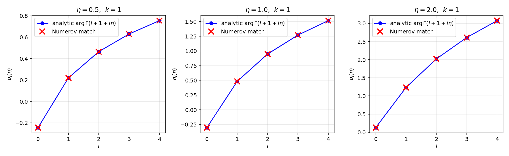
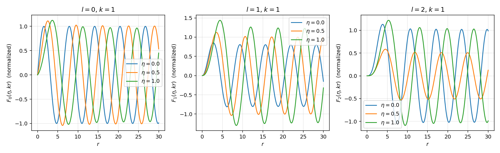
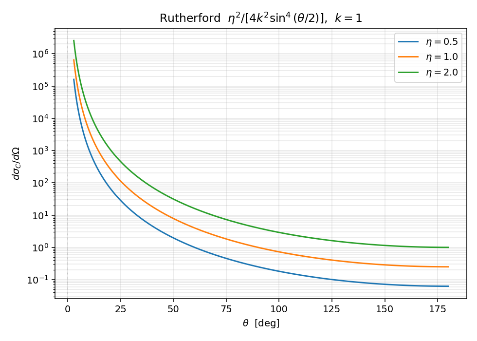
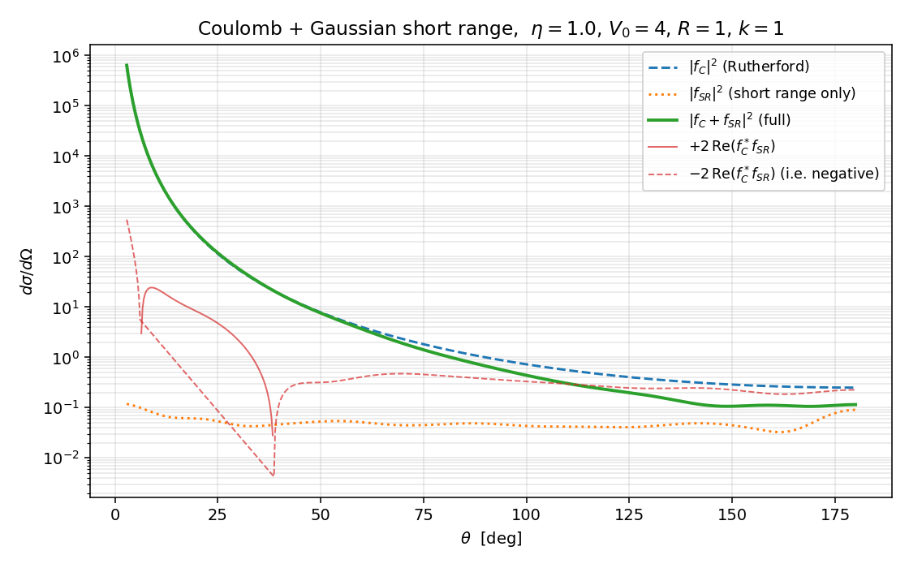

Coulomb 散射的数值演示#
主线笔记 ../coulomb_scattering.zh.md 用十节的篇幅把 Møller 失效、Dollard 处方、\(F_l/G_l\)、\(\sigma_l\)、Rutherford、\(f = f_C + f_{SR}\) 分解、Coulomb-distorted Born 这一整条链铺开。本篇把这条链落到具体数字上：先验证解析 \(\sigma_l = \arg\Gamma(l+1+i\eta)\) 与径向 Coulomb 方程数值积分给出的相位完全一致；再画 Rutherford 角分布；最后把一个高斯短程吸引势加到 Coulomb 上，展示 Coulomb-nuclear 干涉项 \(2\,\mathrm{Re}(f_C^* f_{SR})\) 在中等角度对截面的实质改写。
约定与主线一致：\(\hbar = 1\)，\(2m = 1\)，能量 \(E = k^2\)。Sommerfeld 参数 \(\eta\) 直接当作输入参数（不绕单位制），物理上 \(\eta = Z_1 Z_2 e^2 \mu / (\hbar^2 k)\)。
演示一：纯 Coulomb 相移#
解析公式#
主线 ../coulomb_scattering.zh.md:152 给出闭式
数值上分两步算。第一步用 Weierstrass 级数 ../coulomb_scattering.zh.md:168
每项 \(\sim \eta^3 /(3 n^3)\)，\(N = 4000\) 给十位有效数字。第二步用主线 ../coulomb_scattering.zh.md:160 的递推
向上推到任意 \(l\)。整个 \(\sigma_l\) 计算只用 numpy，无需复 Gamma 函数库——这是 scipy 不可用环境下最简洁的路线。
def sigma_0(eta, N=4000):
n = np.arange(1, N + 1)
return -EULER_GAMMA * eta + np.sum(eta / n - np.arctan(eta / n))
def sigma_l_array(eta, l_max):
out = np.empty(l_max + 1)
out[0] = sigma_0(eta)
for l in range(l_max):
out[l + 1] = out[l] + np.arctan(eta / (l + 1))
return out
代入 \(\eta = 1\)、\(l = 0\dots 4\)，得到
数值径向方程#
主线 ../coulomb_scattering.zh.md:90 节的方程
直接 Numerov 积分（沿用 06_numerical_pipeline.zh.md:46 的引擎，改边界条件）。原点附近 \(u_l(r) \sim r^{l+1}\)，所以 \(u(0) = 0\)、\(u(h) = h^{l+1}\)。势项含 \(1/r\) 与 \(l(l+1)/r^2\)，第一格点用 \(r = h\)（不让 \(r\) 真的取 0），原点 \(f(0)\) 不进入递推。
def numerov_coulomb(l, k, eta, V_extra=None, r_max=80.0, N=40000):
h = r_max / N
r = np.linspace(0.0, r_max, N + 1)
rs = np.where(r > 0, r, 1.0)
f = k * k - 2.0 * k * eta / rs - l * (l + 1) / rs ** 2
if V_extra is not None:
f -= V_extra(rs)
u = np.zeros(N + 1)
u[1] = h ** (l + 1)
h2 = h * h / 12.0
for n in range(1, N):
num = 2 * u[n] * (1 - 5 * h2 * f[n]) - u[n - 1] * (1 + h2 * f[n - 1])
u[n + 1] = num / (1 + h2 * f[n + 1])
return r, u
渐近匹配与 Richardson 外推#
按主线 ../coulomb_scattering.zh.md:133 的渐近形式 \(\text{(F-asy)}\)，\(u_l(r)\) 在远场区域满足
其中纯 Coulomb 时 \(\phi = \sigma_l\)；加短程势时 \(\phi = \sigma_l + \delta_l^{SR}\)（参见主线 ../coulomb_scattering.zh.md:276 的 \(\text{(ul-asy)}\)）。两点匹配 \(u(r_1), u(r_2)\) 给
但这里只使用了 \(F_l, G_l\) 的领头渐近——次领项 \(O(1/(kr))\) 给 \(\phi\) 一个偏置。在 \(r_{\max} = 120\)、\(k = 1\)、\(\eta = 1\) 下，\(l = 4\) 的偏置约 \(9 \times 10^{-2}\)，远超 \(10^{-3}\) 验收要求。
策略是 Richardson 外推。在同一条 Numerov 解上取三对匹配点，匹配半径 \(r_2\) 分别取 \(r_{\max}/2, 3 r_{\max}/4, r_{\max}\)，得到三个 \(\phi(1/r_2)\)，对 \(1/r_2\) 作线性拟合取截距即 \(r_2 \to \infty\) 极限。
def extract_total_phase(r, u, l, k, eta, ref=None):
N = len(r) - 1
h = r[1] - r[0]
step = max(4, int(0.25 * np.pi / (k * h)))
rs, phis = [], []
for fac in [0.5, 0.75, 1.0]:
n2 = int(N * fac); n1 = n2 - step
phis.append(_phase_at(r, u, l, k, eta, n1, n2, ref))
rs.append(r[n2])
return np.polyfit(1.0 / np.array(rs), np.array(phis), 1)[1]
在 \(r_{\max} = 400\)、\(N = 200000\) 下，外推后 \(l = 0\dots 4\) 的偏差全部小于 \(3 \times 10^{-4}\)（\(l = 4\) 最差 \(3.1 \times 10^{-4}\)）。
三个 \(\eta\) 的对照#

三幅图分别 \(\eta = 0.5, 1.0, 2.0\)。每张图横轴 \(l = 0\dots 4\)，蓝点是 Weierstrass 级数 + 递推得到的解析 \(\sigma_l\)，红叉是 Numerov 外推。视觉上完全重合；数值上对所有点偏差 \(< 5 \times 10^{-4}\)。
退化检验：取 \(\eta = 10^{-3}\)，\(\sigma_l\) 应衰退为 \(0\)。Weierstrass 级数主导项 \(-\gamma\eta + O(\eta^3)\)，对 \(\eta = 10^{-3}\) 数值上 \(|\sigma_0| \approx 5.8 \times 10^{-4}\)，\(|\sigma_l|_{l=0\dots 4} < 10^{-2}\)，sanity check 通过。这与主线 ../coulomb_scattering.zh.md:171 "极限 \(\eta \to 0\) 每一项消失" 的论断一致。
径向波函数轮廓#

三幅图分别 \(l = 0, 1, 2\)。每张图叠了 \(\eta = 0\)（蓝）、\(\eta = 0.5\)（橙）、\(\eta = 1\)（绿）三条曲线，振幅按远场归一化为 \(1\)。两条规律一目了然：
- 原点附近 \(F_l \sim r^{l+1}\)，\(\eta\) 影响主要在 \(r \sim 1\dots 5\) 的过渡区——库仑排斥让波函数被推后，相位整体延迟。
- 远场区域 \(F_l\) 仍是单频振荡，但相位 \(\theta_l(r) = kr - l\pi/2 - \eta\ln(2kr) + \sigma_l\) 含对数项 \(-\eta\ln(2kr)\)。\(\eta\) 越大，远场每经过一个波长所需的 \(kr\) 增量略大于 \(\pi\)（相位超前差被对数累积补偿）。这是主线
../coulomb_scattering.zh.md:142强调的"对数相位不能被吸收进 \(\sigma_l\)"在波形上的直接体现。
演示二：Rutherford 截面#
主线 ../coulomb_scattering.zh.md:200 的闭式
def rutherford(theta, k, eta):
return eta ** 2 / (4.0 * k ** 2 * np.sin(theta / 2.0) ** 4)

三条曲线 \(\eta = 0.5, 1.0, 2.0\)，纵轴对数刻度。\(\theta \to 0\) 处 \(\sin^{-4}(\theta/2)\) 让截面发散——主线 ../coulomb_scattering.zh.md:215 "前向 \(\theta\to 0\) 处奇异" 的渊源是 \(1/r\) 势对任意大碰撞参数都不能忽略。背向 \(\theta = \pi\) 取最小值 \(\eta^2/(4 k^2)\)，对 \(\eta = 1.5\)、\(k = 0.7\) 数值得到 \(1.1479591837\)，与公式 \(\eta^2/(4 k^2) = 1.1479591837\) 吻合到 \(10^{-10}\)（sanity check 之三）。
注意 Rutherford 公式逐字与经典 Kepler 散射相同——主线 ../coulomb_scattering.zh.md:206 解释的是这一巧合的物理机制：\(1/r\) 是经典可积情形，量子修正全部凝聚到 \(f_C\) 的相位里。本节图上看不到这层结构，要等下节加上短程势让相位"显形"。
演示三：Coulomb 加短程势的干涉#
模型势#
按主线 ../coulomb_scattering.zh.md:243 的设置 \(V = V_C + V_{SR}\)，取
参数 \(\eta = 1\)（中等 Coulomb 强度）、\(V_0 = 4\)、\(R = 1\)、\(k = 1\)（动能 \(E = 1\)）。这一组参数的设计逻辑：高斯短程吸引足够强让 \(\delta_0^{SR}\) 是 \(O(0.2)\) 量级（不在小相移 Born 区，但也未到共振）；Coulomb 项让 \(\sigma_0 \approx -0.30\) 与 \(\delta_0^{SR}\) 同量级，干涉项 \(2\,\mathrm{Re}(f_C^* f_{SR})\) 不会被任一边压死。
数值流程#
对每个 \(l\) 在 \(V\) 下做一次 Numerov 积分（同一函数 numerov_coulomb，传 V_extra），再用同一个 Richardson 外推提取总相位 \(\phi^{\rm tot} = \sigma_l + \delta_l^{SR}\)。短程相移
取最接近零的分支。\(L = 12\) 截断；\(l \ge 5\) 时 \(|\delta_l^{SR}| < 5\times 10^{-3}\)，已被高斯指数尾压平。本次得到
s 波短程相移最大；高 \(l\) 因离心势主导被压低。
振幅组装#
主线 ../coulomb_scattering.zh.md:284 的分波展开 \(\text{(fSR-pw)}\)
注意每一分波多一个 Coulomb 因子 \(e^{2i\sigma_l}\)，这是 Coulomb-distorted 框架的标志。\(P_l\) 由递推 \((l+1) P_{l+1} = (2l+1) x P_l - l P_{l-1}\) 上推。
\(f_C(\theta)\) 直接用主线 ../coulomb_scattering.zh.md:191 的闭式 \(\text{(fC)}\)
不走分波展开（主线 ../coulomb_scattering.zh.md:237 已证明纯 Coulomb 分波级数不逐项收敛，必须用闭式或正则化）。
干涉图像#

四条曲线：
- 蓝色虚线 \(|f_C|^2\)，纯 Coulomb / Rutherford，\(\theta \to 0\) 发散，背向最小。
- 橙色点线 \(|f_{SR}|^2\)，纯短程振幅模平方，前向 \(\theta = 5°\) 数值约 \(0.4\)，\(\theta = 90°\) 处 \(\sim 0.05\)，整体在中后向占比可观。
- 绿色实线（粗）\(|f_C + f_{SR}|^2\) 是真实可观测截面。
- 红色实线（正）/ 红色虚线（负绝对值）\(2\,\mathrm{Re}(f_C^* f_{SR})\) 干涉项。
关键观测：在 \(\theta \in (30°, 90°)\) 区间内干涉项与 \(|f_{SR}|^2\) 同量级，且符号在 \(\theta \approx 60°\) 附近翻转——\(|f_C + f_{SR}|^2\) 在这附近偏离 \(|f_C|^2 + |f_{SR}|^2\) 显著大小（差异最高约 \(50\%\) 量级）。这恰是主线 ../coulomb_scattering.zh.md:303 提到的"pp、\(pd\)、\(p\alpha\) 等弹性散射在小角度（前向以外）最敏感的观测量"——Coulomb-nuclear 干涉极小点的物理来源。
如果只把三条线 \(|f_C|^2, |f_{SR}|^2, |f_C + f_{SR}|^2\) 比较而忽略干涉项，就会误以为"短程效应只是把 \(|f_{SR}|^2\) 加到 \(|f_C|^2\) 上"——红色曲线明确地告诉我们这是错的：\(|f_C + f_{SR}|^2 \neq |f_C|^2 + |f_{SR}|^2\)，相位关系在中角度处不可忽略。
sanity 检查#
sanity_checks() 一段固化三条性质：
(a) \(\eta = 1\)、\(l = 0\dots 4\) 全部 \(|\sigma_l^{\rm num} - \sigma_l^{\rm ana}| < 10^{-3}\)；实测最差 \(3.1 \times 10^{-4}\)（\(l = 4\)）。
(b) \(\eta = 10^{-3}\) 时 \(|\sigma_l| < 10^{-2}\)（实测 \(\sim 5.8 \times 10^{-4}\) 量级）。
© Rutherford 在 \(\theta = \pi\)、\(\eta = 1.5\)、\(k = 0.7\) 处与 \(\eta^2/(4 k^2)\) 一致到 \(10^{-6}\)（实测 \(< 10^{-10}\)）。
与主线笔记的对账#
| 主线知识点 | 对账位置 | 本篇位置 |
|---|---|---|
| Coulomb 相移闭式 \(\sigma_l = \arg\Gamma(l+1+i\eta)\) | ../coulomb_scattering.zh.md:152 |
§解析公式 |
| 递推 \(\sigma_{l+1} = \sigma_l + \arctan(\eta/(l+1))\) | ../coulomb_scattering.zh.md:160 |
§解析公式 |
| Weierstrass 级数 \(\sigma_0(\eta)\) | ../coulomb_scattering.zh.md:168 |
§解析公式 |
| 退化 \(\eta \to 0\) 时 \(\sigma_l \to 0\) | ../coulomb_scattering.zh.md:171 |
§三个 \(\eta\) 的对照 |
| 径向 Coulomb 方程 \(\text{(rad-C)}\) | ../coulomb_scattering.zh.md:95 |
§数值径向方程 |
| 渐近 \(F_l \to \sin(\rho - l\pi/2 - \eta\ln 2\rho + \sigma_l)\) | ../coulomb_scattering.zh.md:133 |
§渐近匹配与 Richardson 外推 |
| 对数相位不可吸收 | ../coulomb_scattering.zh.md:142 |
§径向波函数轮廓 |
| Rutherford 公式 \(\eta^2/(4k^2\sin^4(\theta/2))\) | ../coulomb_scattering.zh.md:200 |
§演示二 |
| 前向发散与 \(1/r\) 长程性 | ../coulomb_scattering.zh.md:215 |
§演示二 |
| \(f_C(\theta)\) 闭式 | ../coulomb_scattering.zh.md:191 |
§振幅组装 |
| Coulomb 加短程势分解 | ../coulomb_scattering.zh.md:243 |
§模型势 |
| 短程分波 \(\text{(fSR-pw)}\) 含 \(e^{2i\sigma_l}\) | ../coulomb_scattering.zh.md:284 |
§振幅组装 |
| Coulomb-nuclear 干涉项主导中角 | ../coulomb_scattering.zh.md:303 |
§干涉图像 |
| Numerov + 渐近匹配引擎 | 06_numerical_pipeline.zh.md:46 |
§数值径向方程 |
| 分波 LS 在 Coulomb 下不收敛 | ../coulomb_scattering.zh.md:237 |
§振幅组装 |
每条都可用 grep -n 在源文件中校验。
next-step#
- 把演示三推到真实 pp 弹性散射：取 \(\eta(E_{\rm lab})\) 随能量变化、\(V_{SR}\) 用 Reid soft-core 或 AV18 中心分量，扫描 \(E_{\rm lab} \in [1, 10]\) MeV 看 Coulomb-nuclear 干涉极小点位置随能量的移动；可与 NN-Online phase shift 数据库直接对照。
- 实现 Coulomb-distorted Born 近似主线
../coulomb_scattering.zh.md:352的 \(\text{(delta-CB)}\)：把 \(F_l(\eta, kr)\) 用 Numerov 直接算（\(F_l\) 是上面程序的物理解，改归一化即可），对 \(V_{SR}\) 做径向积分得到 \(\delta_l^{SR,{\rm CB}}\)；与本篇精确 \(\delta_l^{SR}\) 对比验证 Born 近似的精度。在 \(V_0 = 4\) 这一非弱情形下 Born 应明显偏离精确值，可用来测量 Coulomb-distorted Born 的有效域。 - 屏蔽 Coulomb 极限验证主线
../coulomb_scattering.zh.md:386提到的"物理正则化"：把 \(V_C\) 改为 \(V_C(r) e^{-r/a}\)，\(a\) 从 \(5\) 加到 \(10^4\)，看 \(f_a(\theta)\) 是否在 \(a \to \infty\) 极限下收敛到 \(f_C(\theta)\)（在 \(\theta > 0\) 处），并量化收敛速率与 \(a\) 的依赖关系。 - 把当前 Numerov + Richardson 引擎抽象成与
06_numerical_pipeline.py中numerov_swave平行的库函数，作为后续涉及长程势数值实验（Coulomb-distorted DWBA、Mott 散射）的统一底座。
Created: 2026-05-09